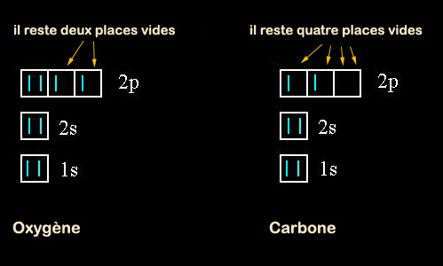
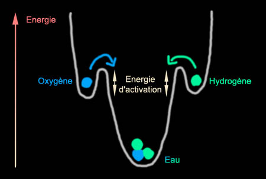

|
|
Navig.
page/section


_____
|
|
Pages soeurs
I, A propos des liants
II, Bulles, siccativ., struct. élec.
III, Caséine, phosphore, dissociation
IV, Les orbitales
V, L'aérogel
VI, Polarisation de la lumière
VII, Sfumato et diffusion Rayleigh
VIII, Les interférentielles
IX, Dextrine, farine et chiralité
X, L'ocre bleue
XI, Les métamatériaux
XII, Le jaunissement
XIII, Laser etc.
XIV, L'holographie
XV, L'holographie numérique
XVI, Extérieur, intérieur, chaux
XVII, L'électrolyse et les ions
XVIII, L'électricité, un peu plus loin
XIX, Oxydation, métaux
XX, Les échelles
XXI, Nature et évolution des résines
XXII, Le mouillage pigmentaire
XXIII, La molette
XXIV, Blanche neige
XXV, Lumière et matière
XXVI, Magnétisme
XXVII, Ambre et vieilles branches
XXVIII, L'origami miroir
XXIX, Le feu
XXX, Peau du métal
XXXI, La ville en un souffle
XXXII, Oxyder des matériaux
XXXIII, Ocre bleue, une solution
_____
|
Copyright © www.dotapea.com
Tous droits réservés.
Précisions cliquer ici
|
|
| |
|
|
Les
dialogues sur la physique-chimie
appliquée
aux arts
Chapitre IV
Les orbitales
et certaines tendances de la matière
|
 |
dial dial
dial
Ce chapitre IV des
Dialogues de Dotapea
est
une discussion entre Jean-Louis, physico-chimiste au CNRS, et un
candide, Emmanuel.
Les personnages sont réels, la
discussion aussi. Elle peut reprendre à tout moment et ce texte peut s'allonger.
La question de la structure électronique a été introduite dans
un passage du
chapitre II.
|
Emmanuel :
Nous avons abordé superficiellement la question essentielle de la
structure électronique, sans laquelle il est difficile de comprendre ce qui
peut se passer en chimie. Peux-tu donner des éléments de base pour
commencer, avant d'aller un peu plus loin ?
Jean-Louis : Les alchimistes, déjà, avaient ébauché une tentative de
classification des éléments en fonction de leurs propriétés physiques ou
chimiques, certes souvent folklorique.
Le chimiste russe
Mendeleïev a
publié en 1872 une classification, appelée depuis "table périodique" ou
"table de Mendeleïev". Cette classification, basée elle aussi sur des
similitudes de propriétés physico-chimiques a reçu plus tard la
justification formelle de ses fondements lorsque la structure de la matière
a été élucidée.
La matière qui nous entoure
résulte de l'assemblage d'unités élémentaires appelées atomes, eux-mêmes
faits de particules appelées protons, neutrons et électrons. Les protons et
les neutrons forment le noyau atomique, les électrons tournent autour,
schématiquement. Les neutrons, particules neutres, servent à maintenir les
protons dans le noyau.
|
|
|
|
...et le nombre de protons,
normalement égal à celui des électrons, s'appelle le numéro atomique. C'est
ce nombre qui fait qu'un élément donné "est ce qu'il est" et pas autre
chose.
L'atome d'azote a pour numéro
atomique 7. Avec 6 ce n'est plus de l'azote mais du carbone, avec 8 c'est de
l'oxygène.
Pour un élément donné, le nombre
de neutrons peut éventuellement varier. L'azote "ordinaire" possède sept
neutrons, il existe aussi de l'azote avec huit neutrons qui possède
exactement les même propriétés chimiques. C'est un
isotope de l'azote. (du
grec iso-topein, "la même place", parce que cet azote à quinze
nucléons occupe la même place que l'azote dans le tableau périodique. Normal
: c'est de l'azote!)
[Lire à ce sujet l'article
La transmutation]
Emmanuel :
D'accord. Venons-en aux couches électroniques.
Jean-Louis : Le nombre de protons (et donc d'électrons) conditionne
non seulement la nature de l'atome mais aussi (voire, avant tout ?) ses
propriétés chimiques. Les électrons ne sont pas comme des mouches autour
d'un pot de confiture mais astreints à certaines orbites précises appelées
"orbitales atomiques" ou orbitales. Quand on progresse dans le tableau
périodique en partant de l'hydrogène (un proton, un électron) les orbitales
atomiques se remplissent progressivement. Ce remplissage se fait suivant des
lois qui échappent un peu à notre entendement de créatures non-quantiques,
mais qui sont bien décrites.

Les orbitales
électroniques s'appellent 1s, 2s, 2p, 3s, 3p, 3d, etc....
Les "s" contiennent deux électrons maxi, les "p" six, les "d"
dix.
|
|
Ipséité d'un élément |
|
Au finale, certaines
configurations électroniques sont plus stables que d'autres et cette
stabilité accrue fera que les réactions chimiques entre les éléments simples
vont dans certaines directions et pas d'autres. Pour prendre une image, en
montagne les pierres ont plus tendance à rouler vers la vallée qu'à partir
vers les sommets.
Parmi les configurations électroniques particulièrement
stables sont :
* les orbitales vides,
* à moitié pleines
* et surtout totalement
pleines.
Quand on a fini de remplir une
orbitale, on passe à l'orbitale suivante.
|
|
Orbitales et stabilité |
|
C'est ce qui entraîne la
périodicité des propriétés physico-chimiques des éléments : les états du
genre "un seul électron dans la dernière orbitale" reviennent
périodiquement. Ce sont les éléments de la première colonne du tableau des
éléments :
lithium, sodium, potassium, rubidium,... ou "métaux alcalins".
Ces éléments ont une forte
tendance à se débarrasser de cet électron qui les éloigne de la
configuration très stable "couche pleine", ils apparaissent donc souvent
sous la forme ionique Li+, Na+, K+, etc. De l'autre côté du tableau,
les éléments (dernière colonne, gaz rares : He, Ne, Ar, Kr, Xe, Rn) ont déjà bien rempli leur
dernière couche, il ne leur manque que quelques électrons supplémentaires.
Ces corps vont avoir tendance à en chercher d'autres.
Cette recherche peut avoir plusieurs issues.
|
|
Les
tendances atomiques fondamentales |
|
Prenons
l'exemple de l'oxygène, à qui il manque deux électrons pour que sa dernière
orbitale, qui peut en contenir six, soit pleine. Il pourra par exemple
chercher un élément prêt à lui prêter deux électrons ou chercher deux
éléments qui pourraient en prêter chacun un.
Premier cas : l'oxygène peut, un
peu paradoxalement, s'associer avec un autre atome d'oxygène, et mettre une
partie de ses électrons en commun avec lui [explications
et schémas in Chap. II].
Le même oxygène peut
aussi s'associer avec le calcium, qui a plutôt deux électrons "en trop" pour
former CaO (la chaux), ainsi chacun est content.
Deuxième cas, l'oxygène
s'associe avec deux atomes d'hydrogène pour former H2O, l'eau.
Entre les deux, si l'on peut
dire, notre oxygène peut chercher l'âme soeur de différentes façons avec
différents éléments qui ont eux aussi des électrons à partager ou à perdre.
Je dis perdre, c'est une image, ils ne peuvent jamais aller très loin de
leur noyau. Toute cette discussion est de toutes façons un peu caricaturale
mais elle décrit globalement ce qui se passe.
|
|
Exemple de l'oxygène |
|
Les chimistes traduisent parfois ces notions en termes de "valence". La
valence étant schématiquement la quantité de "liens" qu'un atome cherche à
établir avec d'autres atomes. Oxygène 2, carbone 4, hydrogène 1, chlore 1,
sodium 1... (je ne parle même pas des exceptions, elles sont légion !).
Sur
cette base on comprend la formation de molécules comme CO2 (gaz
carbonique), HCl (acide chlorhydrique), NaOH (soude caustique). Pour finir,
mentionnons que bien entendu, les molécules ainsi formées sont plus stables
que les produits de départ : la formation d'eau à partir d'hydrogène et
d'oxygène libère beaucoup d'énergie, et que les éléments dont les couches
sont "naturellement" pleines sont très peu réactifs chimiquement, voire pas
du tout, ce sont les gaz rares.
|
|
Valence et stabilité des associations moléculaires |
|
L'idée qu'il faut comprendre
c'est qu'une réaction quelle qu'elle soit ne se fera que si elle apporte
un gain sur le plan énergétique. Les réactions chimiques vont
généralement dans le sens qui minimise l'énergie totale.
Une molécule
d'oxygène O2 possède une certaine énergie de liaison (voir
passage in Chap. II), c'est le travail qu'il a fallu fournir
pour assembler les deux atomes. Pareil pour une molécule d'hydrogène. Si
on met ces deux molécules ensemble, il ne se passe rien, elles sont
stables à température ambiante. Mais si on apporte "un peu" d'énergie
(énergie dite "d'activation") avec une allumette ou même simplement un
catalyseur (mousse de platine, en l'occurrence), les deux molécules
réagissent vigoureusement (au mieux ça brûle, au pire ça explose) pour
donner de l'eau. L'énergie libérée par cette explosion/combustion fait
que la molécule d'eau finale possède très peu d'énergie, elle est donc
très stable.

Voici le dessin
traditionnel des physiciens pour représenter les niveaux d'énergie. Le
système est assujetti à rester sur la courbe, il peut monter et
descendre par exemple si on le chauffe ou si on le refroidit. Les "creux"
sont des points d'équilibre stable. Le système peut donc rester en
équilibre à mi-pente tant que l'on ne le "secoue" pas trop (tant que l'on
reste en deçà de l'énergie d'activation nécessaire). Un exemple
typique est celui des explosifs qui possèdent une forte énergie interne
mais sont dans un état
marginalement stable.
Le fait qu'une grande quantité d'énergie soit
libérée lors de la réaction est signe que le produit final est
particulièrement stable. Pour
fabriquer du plâtre
il faut chauffer du gypse pendant longtemps à haute température. Le
plâtre obtenu est "instable" en ce qu'il ne demande qu'à
réagir avec de l'eau. Lors de la prise, le plâtre chauffe parce que de
l'énergie est libérée (plus ou moins celle que l'on a fourni lors de la
fabrication du plâtre). Le plâtre pris est stable et inerte, il ne
réagit plus. C'est pareil dans l'exemple de l'eau.
|
|
L'énergie :
ce
qu'il faut pour associer, ce qu'il faut pour dissocier...
et pour quelle stabilité ? |
|
Emmanuel : Sur l'énergie de liaison que tu
évoques quelquefois, pourrais-tu donner quelques compléments
d'information ? On comprend que c'est elle qui peut lier les atomes,
mais on comprend mal quelle est sa nature, même si on sent qu'elle a
quelque chose à voir très directement avec la question de la structure
électronique et surtout avec le nombre d'électrons engagés. Au-delà,
l'énergie nécessaire pour dissocier les éléments d'une molécule est-elle
seulement liée à une quantité d'électrons communs impliqués ou faut-il
voir autre chose ?
Jean-Louis : Non, c'est globalement ça.
Conceptuellement, tu peux voir cela comme un ressort maintenu comprimé
par une ficelle. Il possède de l'énergie "interne" qui est libérée si on
coupe la ficelle. Un diable dans sa boite..
|
|
L'énergie de liaison |
|
La suite : chapitre V |
Retour
début de page
|
|

 Communication
Communication


|
|